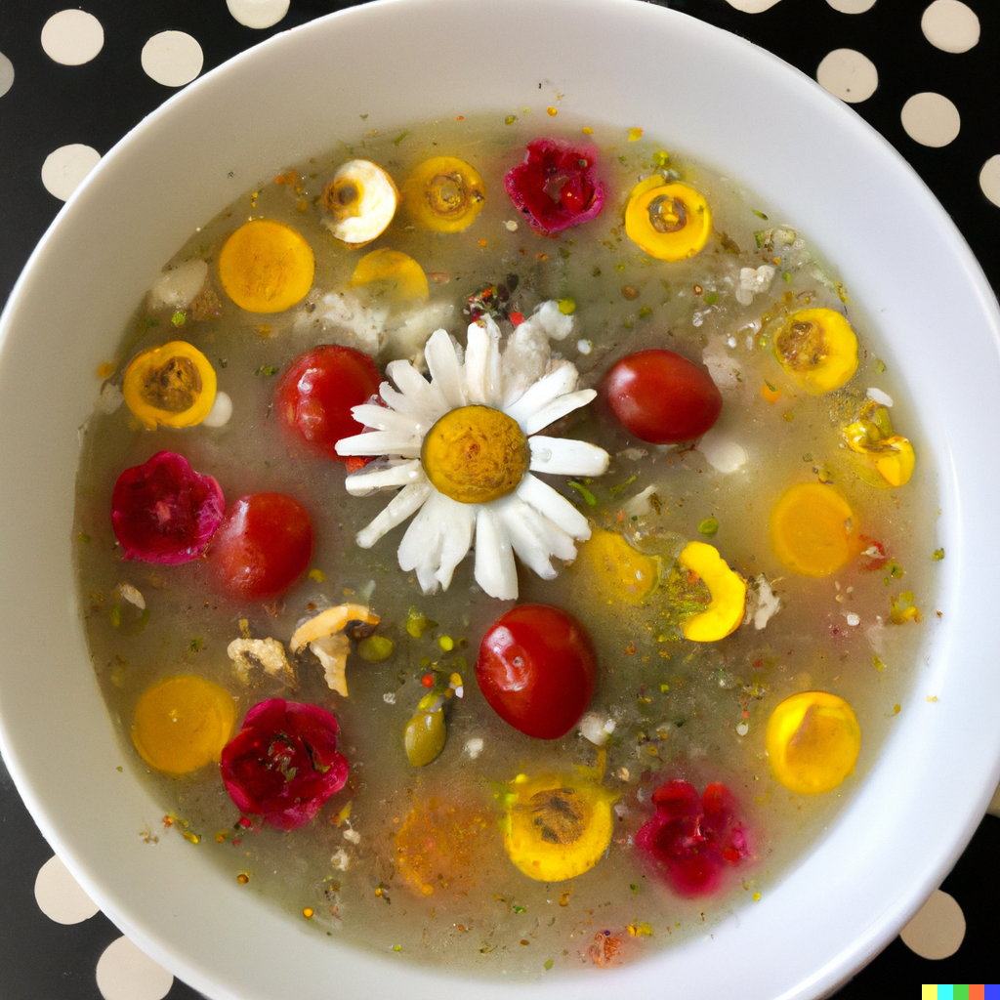
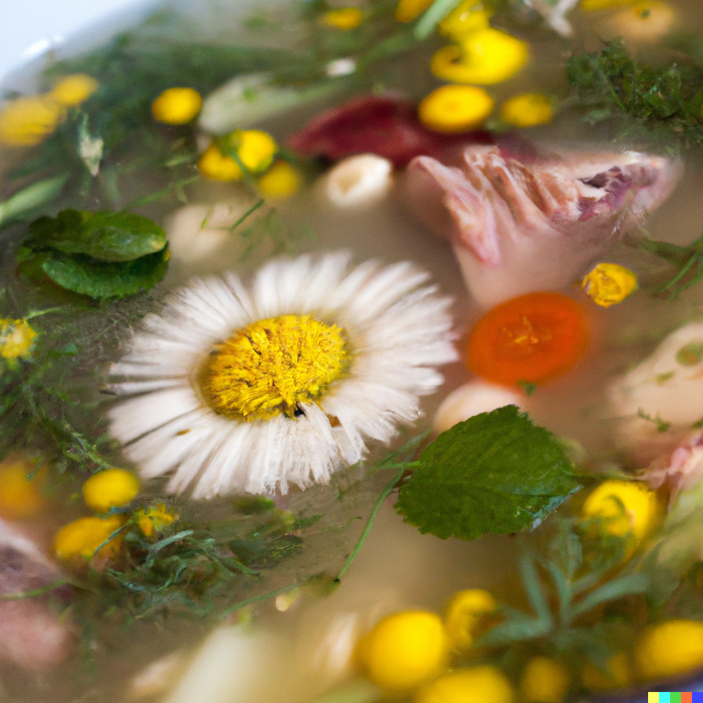
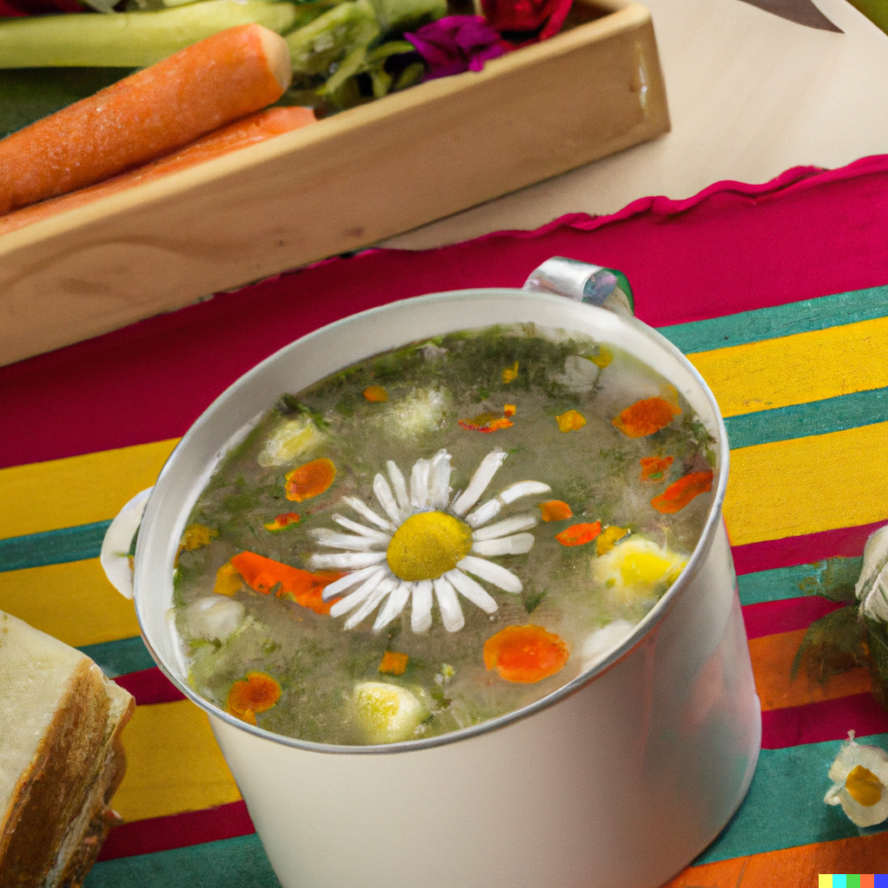
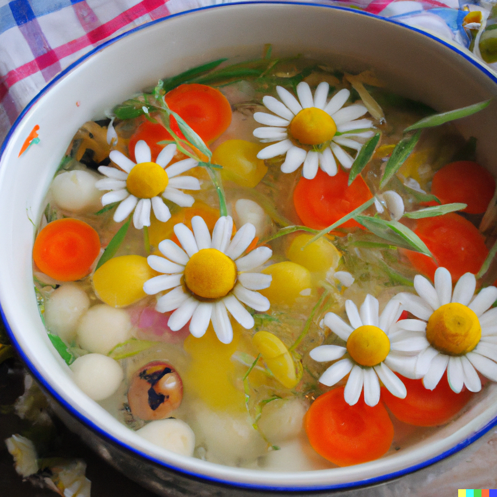

23. December

The Creamy Thyme-For-Soup Soup
Ingredients:
- 1 thumb of olive oil
- 1 small lavender onion, diced
- 2 cloves of indigo garlic, minced
- 1 large tangerine carrot, peeled and diced
- 1 large rose potato, peeled and diced
- 1 cup of crimson lentils, rinsed and drained
- 4 cups of lemon vegetable broth
- 1 cup of canned lavender diced tomatoes
- 1/2 cup of uncooked jade quinoa
- 1 teaspoon of dried cream thyme
- 1/2 teaspoon of dried charcoal rosemary
- 1/4 teaspoon of pink pepper
- 1/4 teaspoon of blue salt
- 1/4 cup of fresh daisy greens, chopped
Instructions:
- Put on your favorite funky hat and a pair of dancing shoes, because it's time to make some soup!
-
Heat the olive oil in a large saucepan over medium heat. Add the lavender onion and indigo garlic, and sauté for 3-4
minutes, or until the onion is translucent.
-
Add the tangerine carrot, rose potato, crimson lentils, lemon vegetable broth, lavender diced tomatoes, jade quinoa,
cream thyme, charcoal rosemary, pink pepper, and blue salt to the saucepan. Stir to combine, using a big wooden spoon
to mix everything together. Make sure to stir the soup in a circular motion, and to sing a little song while you stir
to make the soup taste extra special.
-
Bring the soup to a boil, then reduce the heat to low and let it simmer for 20-25 minutes, or until the lentils and
quinoa are cooked through and the vegetables are tender.
-
Stir in the fresh daisy greens, and season the soup with additional blue salt and pink pepper to taste. Use a pair of
tweezers to add the salt and pepper, and make sure to sprinkle them in a zig-zag pattern for extra fun.
- Serve the soup hot, garnished with extra daisy greens and a sprinkle of rainbow sprinkles.
Optional Instructions:
-
Before starting to cook the soup, make sure to put on a pair of oven mitts and a chef's hat. This will help you
channel your inner chef and will make the soup taste extra delicious.
-
While the soup is simmering, use a pair of tongs to gently squeeze the vegetables and lentils, as if you are giving
them a hug. This will release their flavor and make the soup even more yummy.
-
When the soup is ready, use a ladle to carefully pour the soup into bowls. Make sure to pour the soup in a spiral
pattern, and to make a "whooshing" sound as you pour. This will add some magic and fun to the soup.
Optional Ingredients:
-
You can add a splash of pink unicorn milk to the soup just before serving to give it a creamy and rich texture.
-
For a fun and colorful twist, you can add some diced red dragon beets to the soup along with the other vegetables.
This will give the soup a beautiful pink color and a slightly sweet and earthy flavor.
-
If you want to make the soup even more filling and satisfying, you can add some cooked green goblin chickpeas to the
soup before serving. This will add protein and fiber to the soup, and will make it a complete and balanced meal.
-
If you want to make the soup extra fancy, you can use a pair of scissors to cut the daisy greens into fancy shapes
like stars or hearts. You can also add some edible fairy dust to the soup for a magical touch.
-
For a spicy and flavorful twist, you can add some diced orange ogre bell pepper, some sliced yellow troll jalapeno,
and some chopped green elf cilantro to the soup. This will give the soup a fantasy-inspired flavor and will make it
extra tasty and addictive.



Kusskusskuss!